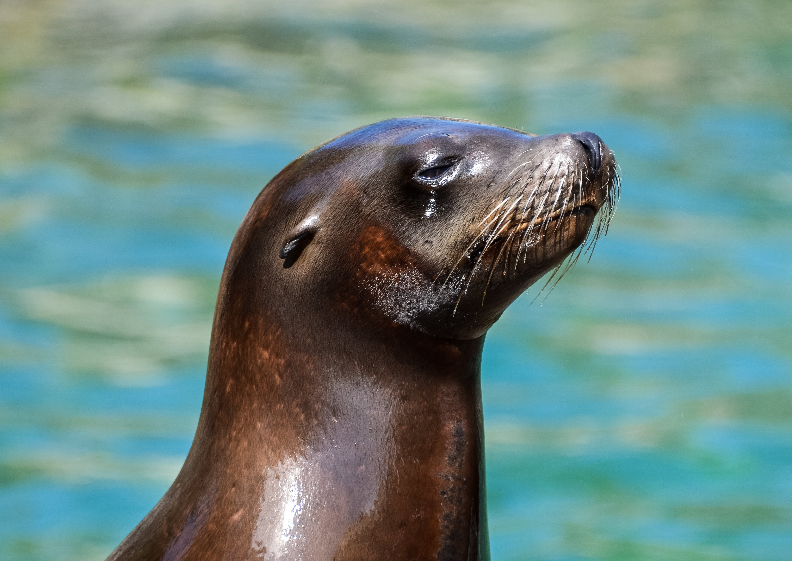

El archipiélago de Galápagos está ubicado a unos 1,000 km de la costa de Ecuador. Fue descubierto por accidente en 1535 cuando el obispo de Panamá, Tomás de Berlanga, fue llevado hacia las islas por las corrientes cuando viajaba a Perú. Las nombró islas de los Galápagos debido a las grandes tortugas gigantes que observó.
Las islas permanecieron prácticamente deshabitadas hasta el siglo XIX cuando se convirtieron en un refugio para los balleneros y piratas. En 1832, el capitán insignia de Ecuador anexó oficialmente el archipiélago. Poco después Charles Darwin visitó las islas en 1835 a bordo del H.M.S Beagle, lo cual inspiró sus teorías sobre la evolución por medio de la selección natural.
A partir de la década de 1860, las islas comenzaron a poblarse lentamente por colonos ecuatorianos. En 1959, aproximadamente el 97% de los residentes de las islas eran ecuatorianos. Ese año se declaró un parque nacional en un esfuerzo por proteger la vida salvaje única de las islas, y se establecieron límites estrictos de residencia e inmigración.
En 1978, las islas fueron declaradas Patrimonio Natural de la Humanidad por la UNESCO. Hoy en día, el Parque Nacional Galápagos protege el 97.5% de la superficie terrestre de las islas siendo el hogar de una fauna y flora endémica. Las islas siguen proporcionando a los científicos un laboratorio vivo de evolución.
Su biodiversidad única en el mundo y el alto endemismo de especies. Muchas especies de animales y plantas sólo se encuentran en Galápagos.
El importante papel que jugaron las islas en el desarrollo de la teoría de la evolución de Darwin. Fue crucial para entender los procesos evolutivos.
La variedad de ecosistemas y hábitats únicos que albergan, desde tundras húmedas hasta desiertos áridos.
Las distintas formaciones geológicas como cráteres, campos de lava, cuevas, acantilados que le dan un paisaje singular.
La historia humana de las islas, desde su descubrimiento y sus primeros habitantes hasta la actual reserva ecológica.
La gran diversidad de aves únicas, como los pingüinos de Galápagos, piqueros de patas azules, fragatas y aves marinas migratorias.
En 2018 se elaboró una lista con las especies en peligro de extinción, entre las que encontramos:
¡Comentario enviado correctamente!
Comentarios